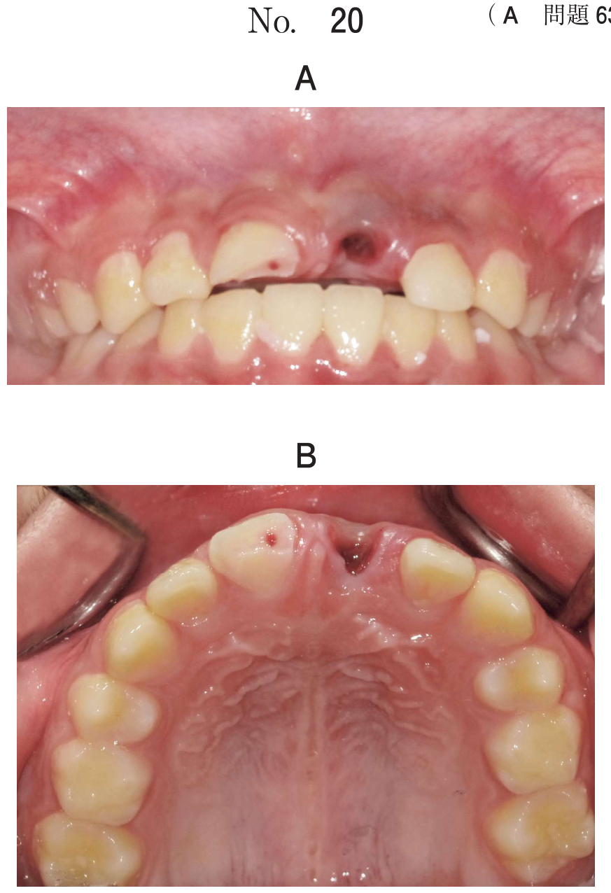

歯科診療において緊急事態が起こった際、適切な救急処置を行うために生命徴候（バイタルサイン）の確認が必要となる。バイタルサインとは、人間が生きている状態を示す指標で、呼吸、血圧、脈拍、体温の4徴候を意味し、これに意識レベルが含まれる。
| 項目 | 正常値（成人） | 異常 |
|---|---|---|
| 呼吸 | 14〜20回/分 | 頻呼吸：24回/分以上、徐呼吸：10回/分以下 |
| 血圧 | 収縮期＜140 / 拡張期＜90 mmHg | 収縮期80mmHg以下→ショック |
| 脈拍 | 60〜100回/分 | 頻脈：100回/分超、徐脈：60回/分未満 |
| 体温 | 35〜37℃（深部温） | — |
心臓から拍出される血流は末梢動脈の血管に拍動として伝わり、脈拍として触れることができる。
| 動脈 | 触知部位 | 緊急時の使用 |
|---|---|---|
| 総頸動脈 | 気管と胸鎖乳突筋前縁の間のくぼみ | ○（心臓に近く確実） |
| 橈骨動脈 | 手首の橈側（親指側） | ○（日常的に使用） |
| 浅側頭動脈 | 耳前部 | △ |
| 上腕動脈 | 上腕内側 | △（乳児ではこちら） |
| 大腿動脈 | 鼠径部 | △（衣服の上から困難） |
| 足背動脈 | 足背部 | △（末梢で不確実） |
歯科治療中の偶発症発生時において脈拍を触知するのに適切なのはどれか。2つ選べ。
【解説】偶発症発生時に適切な脈拍触知部位は、総頸動脈（b）と橈骨動脈（c）。総頸動脈は心臓に近く確実に触知でき、橈骨動脈は手首で簡便に触知できる。顔面動脈（a）は細く不安定で緊急時には不適。大腿動脈（d）は衣服の上からは困難。足背動脈（e）は末梢で不確実。
意識レベルの把握は、中枢神経の機能の状態を判断することであり、どの程度の刺激でどのように反応するかによって評価する。
| 大分類 | 小分類 | スコア |
|---|---|---|
| 開眼（E） | 自発的 | 4 |
| 言葉により | 3 | |
| 痛み刺激により | 2 | |
| 開眼しない | 1 | |
| 言語（V） | 見当識あり | 5 |
| 錯乱状態 | 4 | |
| 不適当な言葉 | 3 | |
| 理解できない発語 | 2 | |
| 発語がみられない | 1 | |
| 運動（M） | 命令に従う | 6 |
| 痛み刺激部位に手足をもってくる | 5 | |
| 四肢を屈曲する（逃避） | 4 | |
| 異常屈曲 | 3 | |
| 四肢伸展 | 2 | |
| まったく動かさない | 1 |
各項目の合計で意識障害の重症度を評価。最重症は3点、最軽症は15点。8点以下は重症意識障害とされる。
| 呼吸型 | パターン | 関連病態 |
|---|---|---|
| チェーン・ストークス型 | 呼吸量が漸増→漸減→無呼吸（10〜20秒）を繰り返す。周期は30秒〜2分 | 中枢神経系の障害、脳の低酸素状態 |
| ビオー型 | 深い呼吸が突然消失し、無呼吸のあとに再び深い呼吸が始まる | 脳膜炎 |
| クスマウル型 | 深い呼吸が持続する異常呼吸 | 糖尿病性ケトアシドーシス、尿毒症（代謝性アシドーシスの代償） |
倒れている人を発見した場合、BLS（一次救命処置）のアルゴリズムに従って対応する。
| 手順 | 内容 |
|---|---|
| 1. 反応の確認 | 肩を軽く叩きながら「大丈夫ですか」と声をかける |
| 2. 通報・AED手配 | 反応なし→大声で応援を呼び、119番通報とAEDの手配を依頼 |
| 3. 呼吸の確認 | 気道確保を行いながら呼吸を10秒以内で確認 |
| 3a. 正常な呼吸あり | 気道確保、回復体位を考慮、応援を待つ |
| 3b. 呼吸なし/死戦期呼吸 | ただちに胸骨圧迫を開始 |
| 4. CPR | 胸骨圧迫30回＋人工呼吸2回（30：2） |
| 5. AED装着 | 心電図解析→電気ショックの要否を判断 |
歯科医院の待合室で倒れている患者を発見した。呼びかけに反応しない。
まず行うのはどれか。2つ選べ。
【解説】反応のない患者を発見した場合、BLSアルゴリズムに従い、まず119番通報（e）とAEDの手配（d）を行う。胸骨圧迫（b）や人工呼吸（c）は呼吸・脈拍の確認後に行うものであり、通報が優先。下肢挙上（a）はショック時の補助的対応。
| 状態 | 対応 |
|---|---|
| 反応なし＋正常な呼吸あり | 気道確保＋回復体位＋応援を待つ |
| 反応なし＋呼吸なし/死戦期呼吸 | ただちに胸骨圧迫を開始（CPR） |
回復体位とは、意識がないが呼吸がある場合に、嘔吐物による窒息を防止するために側臥位にする体位である。気道を確保しつつ、嘔吐した場合に口腔内から吐物が流れ出るようにする。
83歳の男性。齲蝕治療を希望して来院した。糖尿病の既往がある。処置直前の血糖値は134mg/dLであった。生体モニタを装着後、齲蝕治療中に呂律が回らなくなり意識を失った。呼吸はあるが呼びかけに応答しないため救急対応システムに出動を要請した。このときの生体モニタの写真（別冊No.34）を別に示す。
次に行うのはどれか。1つ選べ。

【解説】呼吸はあるが意識なし→BLSアルゴリズムに従い回復体位（a）が適切。胸骨圧迫（b）・人工呼吸（c）は呼吸がない場合に行う。呂律が回らない＋意識消失→脳血管障害が疑われるが、呼吸がある以上まず回復体位で気道を確保する。血糖値134mg/dLは正常範囲であり低血糖は否定的→ブドウ糖投与（d）は不適切。アドレナリン（e）はアナフィラキシーや心停止時の薬剤。
心肺蘇生法により傷病者を社会復帰に導くためには、一連の救命処置がうまく連携されることが大切である。
| # | 要素 | 内容 |
|---|---|---|
| 1 | 心停止の予防 | 急性冠症候群や脳卒中の初期症状の早期発見 |
| 2 | 心停止の早期認識と通報 | 反応なし→119番通報＋AED手配 |
| 3 | 一次救命処置（BLS＋AED） | 胸骨圧迫、人工呼吸、AEDによる除細動 |
| 4 | 二次救命処置と心拍再開後の集中治療 | 薬物投与、気管挿管、原因究明、集中治療 |